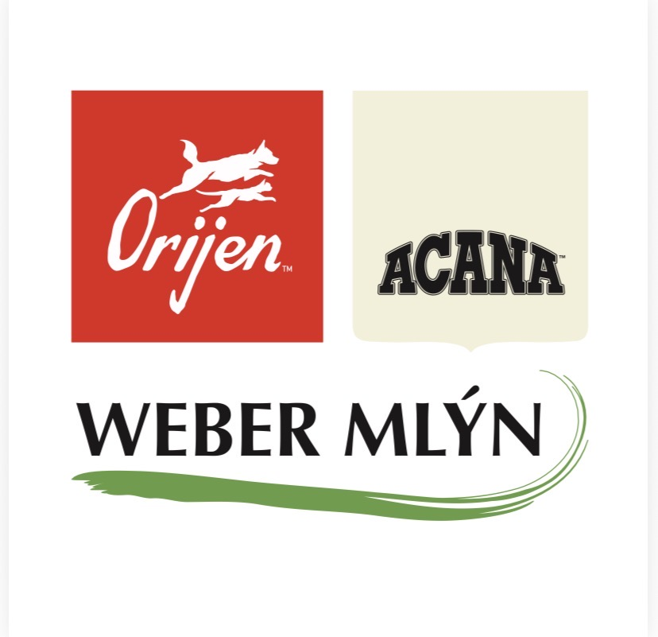
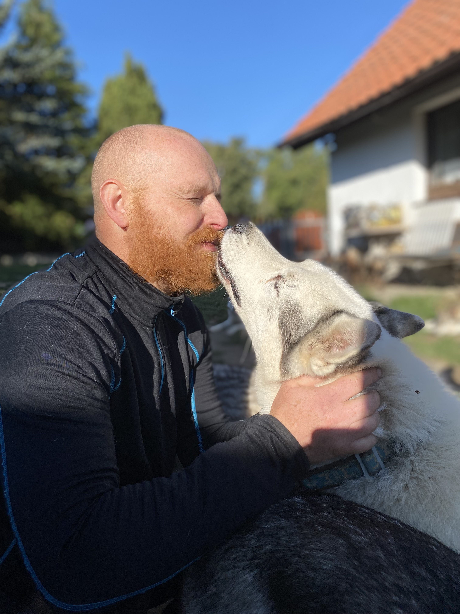
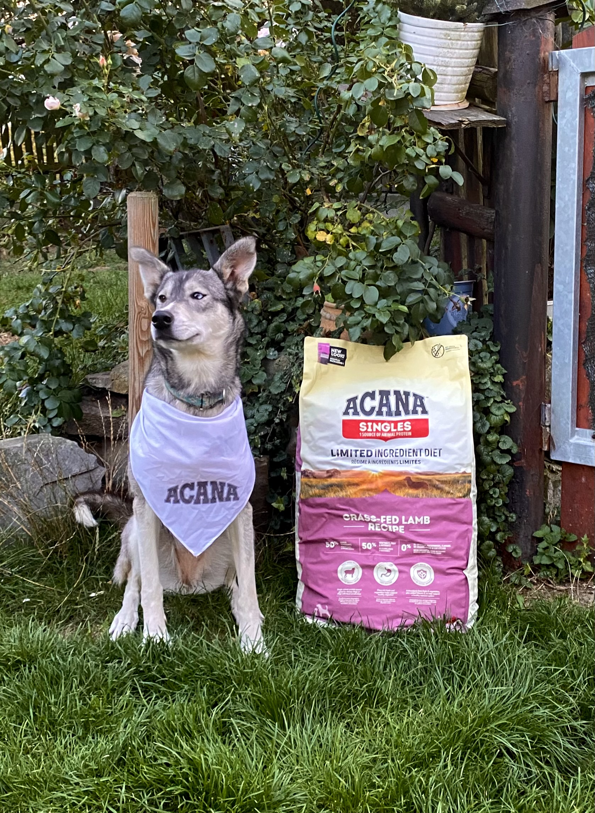

Weber Mlýn
Aby byla bříška plná.

Kvalitní výživa s tradicí
Příběh rodinné firmy Weber Mlýn začíná v Hořovicích, v historickém Dvorském mlýně, který se v roce 1991 vrátil do rukou rodiny Weberových. Z původního obchodu s obilím a krmnými směsmi postupně vyrostla společnost, která dnes patří mezi významné dodavatele kvalitní výživy pro psy a kočky.
Weber Mlýn je výhradním dovozcem prémiových kanadských krmiv ACANA a ORIJEN do České republiky. Obě značky jsou známé vysokým podílem kvalitních živočišných surovin a důrazem na výživu odpovídající přirozeným potřebám psů a koček.
Kromě těchto značek nabízí Weber Mlýn také široký výběr dalších pečlivě vybíraných krmiv, pamlsků a chovatelských potřeb.
Kde Weber Mlýn najdete?
Firma sídlí v Hořovicích a provozuje čtyři vlastní kamenné prodejny – v Hořovicích, Berouně, Příbrami a Praze 5 – Stodůlkách. Její produkty jsou dostupné také prostřednictvím sítě autorizovaných prodejců po celé České republice.
Nakupovat lze pohodlně i online v e-shopu, který se zaměřuje na kvalitní a prověřené produkty pro každodenní péči o zvířata.
Partner chovatelů a psích sportovců
Weber Mlýn se dlouhodobě věnuje také podpoře chovatelů, kynologických klubů, útulků a sportovních týmů.
Jedním z jeho dlouholetých ambasadorů je můj partner, musher Honza Svoboda, který se věnuje závodům psích spřežení se sibiřskými husky.

Díky této spolupráci pomáhá Weber Mlýn už řadu let plnit misky našim šestnácti chlupatým sportovcům. A kdo někdy viděl šestnáct hladových husky čekat na večeři, dobře ví, že kvalitní krmení je pro takový tým naprostý základ!
Aby byla bříška plná
Právě tato slova nejlépe vystihují, proč má Weber Mlýn na stránkách Uki své místo.
Firma, která už tolik let pomáhá pečovat o naše psy, se nyní stala také oficiálním partnerem vydání knihy Uki a ztracení psi.

Za dlouholetou spolupráci, důvěru a podporu mé první knihy patří Weber Mlýn velké poděkování.
A našich šestnáct husky? Ti by nejraději poděkovali po svém. U pořádně plné misky!
Aby byla bříška plná. 🐾